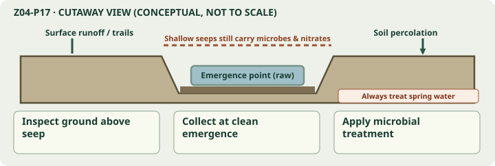

Z04-P17 · Water · New manuscript
Screen springs, seeps and groundwater outlets for hidden runoff
Evaluate natural springs and hillside seeps without assuming groundwater emergence guarantees purity.
When it applies · Collecting water from rocky seeps, piped springs or shallow ground outlets in backcountry or rural terrain.
Equipment · Clean scoop or raw bottle, pre-filter cloth and validated microbial treatment.

Actions
- Inspect the area directly above the spring outlet for trails, campsites, livestock, latrines, roads or surface runoff entering the seep.[W22, W09, ED]
- Collect where water emerges cleanly before it pools in mud or vegetation, avoiding any corroded pipe or unknown catchment box of uncertain history.[W09, W06, ED]
- Treat spring and seep water as raw unless an agency confirms current potable testing; shallow groundwater can carry pathogens and dissolved minerals.[W09, W23]
Failure recognition · Assuming a cold roadside pipe or forest seep is naturally filtered free of Giardia, bacteria or agricultural nitrates.[W09, W19, W23]
Verify · Confirm upstream ground is clear of obvious waste or spills and record the microbial treatment applied before drinking.[W09, W22, ED]
Stop or change course · Reject springs near mine tailings, oil sheen, septic drainfields or agricultural chemical runoff; microbial treatment cannot remove dissolved toxins.[W01, W22, W23]
Evidence and editorial notes
- W01 · CDC · How to Make Water Safe in an Emergency (2024-09-19)
- Section: Water with fuel or toxic chemicals in it · Conditions: Suspected fuel, toxic chemicals or radioactive contamination
Support: Use a different safe supply. Standard boiling and microbial disinfection do not make this water safe.
Limitations: Does not list contaminant-specific lab remediation; applies to emergency consumer decisions only. · Conflicting evidence: None across CDC/EPA emergency guidance.
Editorial note: Used as upstream hard-stop gate prior to any field treatment card. · Specialist reviewer: Drinking-water safety and public health
Primary source · checked 2026-11-24 - W06 · CDC · How to Create an Emergency Water Supply (current web edition)
- Section: How to store emergency water; Safe storage containers · Conditions: Potable water intended for emergency storage
Support: Prefer sealed commercial water or clean food-grade tight-closing containers. Avoid containers that held toxic chemicals.
Limitations: Container shelf durability and rotation depend on plastic/material type and storage heat. · Conflicting evidence: None; reinforces strict raw-vs-clean segregation.
Editorial note: Used to enforce labeling and dedicated raw/potable vessel separation. · Specialist reviewer: Drinking-water safety and public health
Primary source · checked 2026-11-24 - W09 · CDC · Water Treatment Options When Hiking, Camping, or Traveling (current web edition)
- Section: Overview and water treatment methods · Conditions: Hiking or camping where no safe source is confirmed
Support: Even clear water can contain germs. Assess the supply and carry safe water or an appropriate treatment method.
Limitations: Visual clarity never detects microbes or dissolved chemical contaminants. · Conflicting evidence: None across CDC/NPS/EPA sources.
Editorial note: Reinforces clarity-is-not-potability invariant across all Z04 cards. · Specialist reviewer: Drinking-water safety and public health
Primary source · checked 2026-11-24 - W19 · CDC · Preventing Giardia Infection (current web edition)
- Section: Drinking water and preventing infection while hiking or camping · Conditions: Untreated surface water in wilderness and rural watersheds
Support: Use boiling or a parasite-rated filter. Chemical treatment effectiveness depends on product, target organism, temperature and contact time.
Limitations: Pore size alone does not protect if cartridge seals leak or freeze-crack. · Conflicting evidence: None; underscores why chemical-only treatment has parasite limits.
Editorial note: Clarifies why filter micron/NSF ratings matter for protozoa. · Specialist reviewer: Drinking-water microbiology and public health
Primary source · checked 2026-11-24 - W22 · US EPA · National Primary Drinking Water Regulations (current web edition)
- Section: National Primary Drinking Water Regulations · Conditions: Surface or groundwater near agriculture, industry, mines, roads, or old plumbing
Support: Regulated drinking-water hazards span inorganic chemicals (lead, arsenic, nitrate), organic solvents, pesticides, radionuclides, and microbes; microbial treatments do not remove dissolved inorganic or organic chemicals.
Limitations: Field observation cannot measure dissolved chemical concentration; laboratory testing is required. · Conflicting evidence: None; underpins strict chemical-rejection boundaries.
Editorial note: Explains why agricultural runoff, mine tailings, and road salt/fuel require source rejection. · Specialist reviewer: Environmental toxicology and drinking-water safety
Primary source · checked 2026-11-24 - W23 · Minnesota Dept. of Health · Drinking Water Contaminants (current web edition)
- Section: Drinking Water Contaminants · Conditions: Minnesota surface and groundwater sources
Support: Agricultural nitrates, industrial chemicals, road runoff, and naturally occurring minerals can affect local water independent of visual clarity or microbial load.
Limitations: Specific contaminant risk varies by county, aquifer, and watershed land use. · Conflicting evidence: None; regionalized extension of EPA-CONTAM.
Editorial note: Anchors Upper Midwest watershed and land-use source screening. · Specialist reviewer: Regional environmental health
Primary source · checked 2026-11-24
Source lineage · EPA contaminants and CDC backcountry water; new manuscript · Classification · New manuscript.